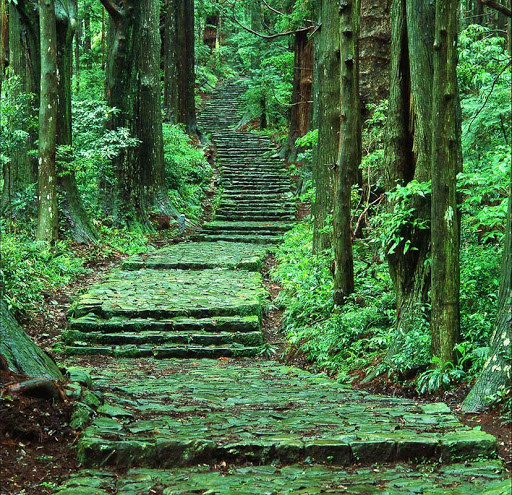

絶対みたい景色３選
橋杭岩とは・・・
『昔弘法大師が天の邪鬼と串本から沖合いの島まで橋をかけることが出来るか否かの賭けを行った。弘法大師が橋の杭をほとんど作り終えたところで天の邪鬼はこのままでは賭けに負けてしまうと思い、ニワトリの鳴きまねをして弘法大師にもう朝が来たと勘違いさせ、弘法大師は諦めて作りかけでその場を去った。そのため橋の杭のみが残った』という伝説がある。
あらぎ島とは・・・
大小の水田が扇状に形成されて出来たとっても美しい棚田、あらぎ島。美しくも不思議な景観におもわず時間を忘れて見入ってしまいます。「日本の棚田百選」にも選ばれていて、和歌山では有名な写真スポット。季節によって田んぼの色合いも変わるので、四季折々で異なる景色を楽しめます。


おすすめプラン

熊野古道・高野参詣道を歩く
熊野古道や高野参詣道を歩くためのモデルプランを交通機関や宿泊地・トレッキングコースなどを交えてご紹介します。

古座川カヌー
透明度が高い古座川の清流を堪能できるカヌー。初心者はインストラクター同行カヌー体験ツアーを。

フィッシングカヤック
海の景勝、橋杭岩を眺めながら楽しめるフィッシングカヤック。